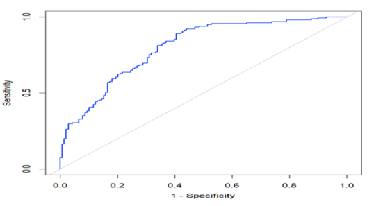
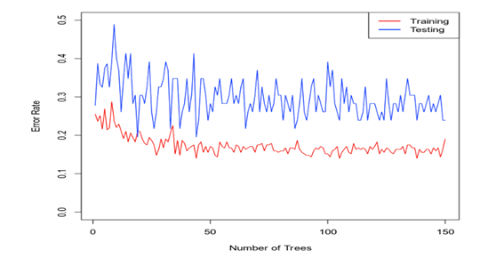

Case Study: Heart Disease Prediction
1. Introduction
This case study explores the use of statistical modeling and machine learning to predict the presence of heart disease based on selected health-related measurements. The analysis considers variables such as age, resting blood pressure, maximum heart rate, cholesterol, and exercise-induced angina.
The objective is to evaluate how logistic regression and Random Forest classification can use patient information to estimate or classify the likelihood of heart disease. The results illustrate how predictive modeling can support data analysis in a healthcare context. These models are intended for analytical demonstration and are not a substitute for professional medical diagnosis.
2. Research and Methodology
This study applies two predictive modeling approaches: logistic regression and Random Forest classification. The models use health-related variables to predict the presence or absence of heart disease.
Table 1 describes the variables included in the analysis.
Table 1
Data Descriptions for the Heart Disease Dataset
| No. | Variable | Description |
|---|---|---|
| 1 | hd | Heart disease presence: 0 = no, 1 = yes |
| 2 | age | Patient's age |
| 3 | sex | Patient's sex: 0 = female, 1 = male |
| 4 | bp_rest | Resting blood pressure |
| 5 | ang_exe | Exercise-induced angina: 0 = no, 1 = yes |
| 6 | hr_max | Maximum heart rate achieved |
| 7 | pain_che | Type of chest pain: 0 = no, 1 = typical angina, 2 = atypical angina, 3 = non-anginal pain |
| 8 | ecg_rest | Resting electrocardiographic measurement: 0 = normal, 1 = ST-T wave abnormality, 2 = probable or definite left ventricular hypertrophy by Estes' criteria |
| 9 | chol | Cholesterol measurement |
| 10 | num_ves | Number of major vessels |
3. Logistic Regression Model for Heart Disease
3.1 Fitting the Logistic Regression Model
Logistic regression is used to estimate the probability of heart disease based on selected predictor variables. The model includes age (\(X_1\)), resting blood pressure (\(X_2\)), exercise-induced angina (\(X_3\)), and maximum heart rate (\(X_4\)).
The expected probability of heart disease is represented by:
The estimated logistic regression equation is:
Here, \(\hat{\pi}\) represents the estimated probability of heart disease. The coefficient estimates and their statistical significance are summarized in Table 2.
Table 2
Coefficient Estimates for the Logistic Regression Model
| Variable | Estimate | Std. Error | Test Statistic | p-value |
|---|---|---|---|---|
| (Intercept) | -1.0211 | 1.7842 | -0.5723 | 0.5671 |
| age | -0.0175 | 0.0171 | -1.0236 | 0.3060 |
| bp_rest | -0.0149 | 0.0083 | -1.7857 | 0.0741 |
| ang_exe1 | -1.6250 | 0.3058 | -5.3143 | p < 0.001 |
| hr_max | 0.0311 | 0.0073 | 4.2740 | p < 0.001 |
3.2 Model Fit: Hosmer-Lemeshow Goodness-of-Fit Test
The Hosmer-Lemeshow goodness-of-fit test evaluates whether the predicted probabilities from a logistic regression model are consistent with the observed outcomes across groups of predicted risk.
The test statistic is:
where \(O_i\) and \(E_i\) represent the observed and expected counts in the \(i\)-th group, respectively, and \(G\) is the number of groups.
Table 3 presents the test results. The p-value is 0.3264, which is greater than the 5% significance level. Therefore, the null hypothesis is not rejected. The test does not provide evidence of a lack of fit for the logistic regression model.
Table 3
Hosmer-Lemeshow Goodness-of-Fit Test
| Chi-squared | df | p-value |
|---|---|---|
| 9.192 | 8 | 0.3264 |
3.3 Assessing Logistic Regression Performance
The logistic regression model is evaluated using accuracy, precision, and recall. These metrics are calculated from the confusion matrix shown in Table 4.
Table 4
Confusion Matrix for the Logistic Regression Model
| Predicted: 0 | Predicted: 1 | |
|---|---|---|
| Actual: 0 | 89 | 49 |
| Actual: 1 | 31 | 134 |
Table 5
Performance Metrics for the Logistic Regression Model
| Metric | Value |
|---|---|
| Accuracy | 73.6% |
| Precision | 73.22% |
| Recall | 81.21% |
The logistic regression model achieves an accuracy of 73.6%. Among the observations predicted to have heart disease, 73.22% are correctly classified. Among the observations with actual heart disease, the model correctly identifies 81.21%.
The model's classification performance is also illustrated by the ROC curve in Figure 1.

3.4 Predicting the Probability of Heart Disease
One advantage of logistic regression is its ability to estimate the probability of an outcome based on a set of predictor values. Table 6 illustrates two hypothetical patient profiles and their estimated probabilities from the fitted model.
Case 1 has an estimated probability of 0.2716, while Case 2 has an estimated probability of 0.7853. Thus, Case 2 has a higher estimated probability of heart disease under this model.
Table 6
Predicted Probabilities and Odds from the Logistic Regression Model
| Measure | Case 1 | Case 2 |
|---|---|---|
| Age (years) | 50 | 50 |
| Resting Blood Pressure (bp_rest) | 122 | 130 |
| Exercise-Induced Angina (ang_exe) | 1 | 0 |
| Maximum Heart Rate (hr_max) | 140 | 165 |
| Predicted Probability | 0.2716 | 0.7853 |
| Predicted Odds | 0.3728 | 3.6571 |
4. Random Forest Classification Model for Heart Disease
4.1 Model Development
The Random Forest analysis uses a dataset containing 303 observations. The dataset is divided into training and testing subsets using an 85%–15% split.
The model uses the following predictors:
chest pain type (pain_che), resting blood
pressure (bp_rest), cholesterol
(chol), resting electrocardiographic results
(ecg_rest), exercise-induced angina
(ang_exe), and number of major vessels
(num_ves).
Figure 2 displays the training and testing error rates as the number of trees increases from 1 to 150. The error-rate curves become relatively stable as additional trees are included.

4.2 Assessing Random Forest Performance
Using the selected Random Forest model with 50 trees, the training and testing performance metrics are summarized in Table 7.
Table 7
Performance Metrics for the Random Forest Model
| Performance Metric | Training Dataset | Test Dataset |
|---|---|---|
| Accuracy | 0.8444 | 0.6522 |
| Precision | 0.8503 | 0.7000 |
| Recall | 0.8467 | 0.7500 |
The Random Forest model achieves a test accuracy of 65.22%, precision of 70.00%, and recall of 75.00%. The differences between training and testing results indicate that its performance is lower on unseen observations than on the training data.
5. Model Selection and Comparison
Table 8 compares the test performance of logistic regression and Random Forest classification. Logistic regression achieves higher test accuracy (73.6% compared with 65.22%) and slightly higher precision (73.22% compared with 70.00%). It also achieves higher recall (81.21% compared with 75.00%).
Based on these reported metrics, logistic regression performs better than Random Forest on all three test performance measures in this analysis.
Table 8
Performance Comparison of Logistic Regression and Random Forest
| Performance Metric | Logistic Regression | Random Forest |
|---|---|---|
| Accuracy | 0.74 | 0.6522 |
| Precision | 0.73 | 0.7000 |
| Recall | 0.81 | 0.7500 |
6. Recommendation and Conclusion
Based on the reported test results, logistic regression is the preferred model in this comparison. It achieves higher accuracy, precision, and recall than Random Forest. In addition, logistic regression provides estimated probabilities, allowing the analysis to quantify the predicted likelihood of heart disease for different combinations of predictor values.
Random Forest provides an alternative classification approach, but its test performance is lower in this particular analysis. The comparison demonstrates the importance of evaluating multiple models rather than assuming that a more complex machine learning algorithm will necessarily produce better predictions.
Overall, this project demonstrates the application of statistical modeling, machine learning, and classification metrics to a healthcare-related prediction problem.